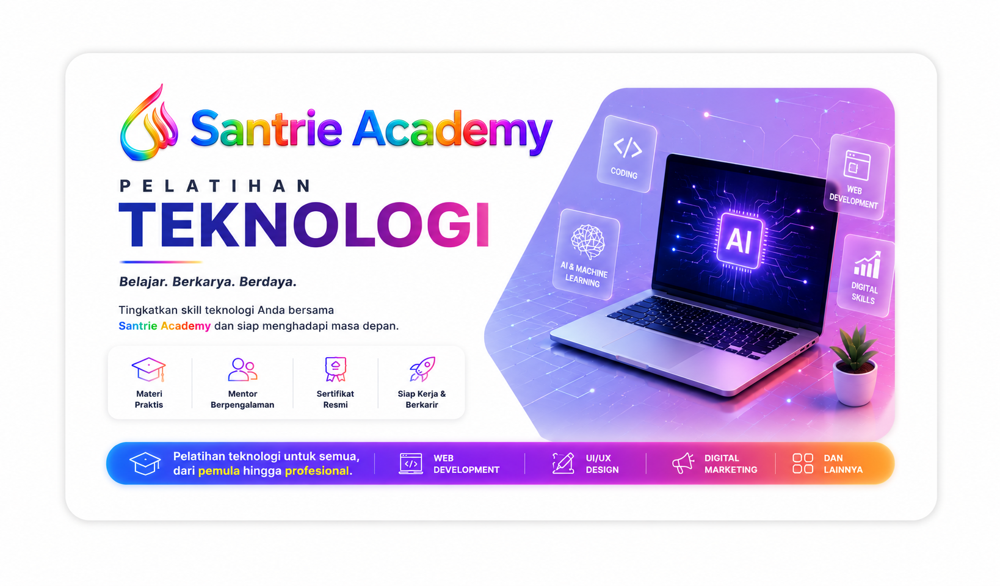
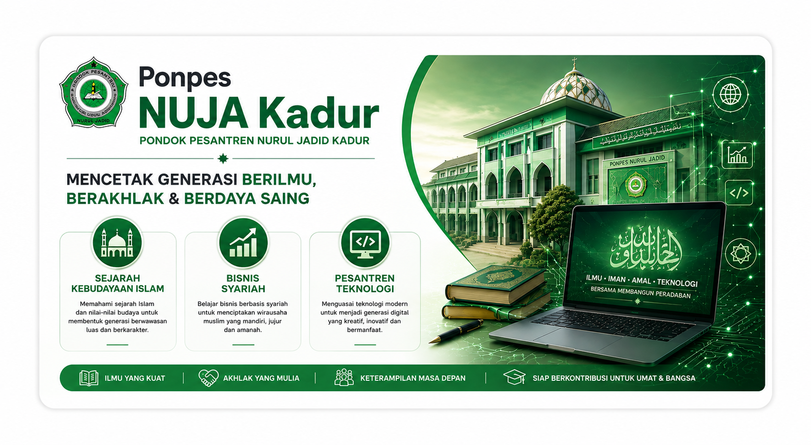

Asli dari Pulau Madura
Menghubungkan keilmuan, teknologi, dan kolaborasi untuk menciptakan sesuatu yang bermanfaat.
Saya adalah seorang profesional yang memiliki minat dan pengalaman di bidang Ekonomi Syariah serta teknologi informasi.
Saya tertarik mengembangkan berbagai solusi yang dapat membantu masyarakat, dunia pendidikan, dan pelaku usaha.
Dalam setiap pekerjaan, saya mengedepankan integritas, inovasi, dan kualitas.
Bagi saya, teknologi merupakan sarana untuk membuat sesuatu menjadi lebih sederhana, efektif, dan memberikan manfaat yang berkelanjutan.
Mengembangkan sesuatu yang sederhana, bermanfaat, dan bernilai.
Konsultasi dan pendampingan dalam bidang ekonomi dan bisnis berbasis prinsip syariah.
Pengembangan website, Website Kampus, Website Jurnal OJS, dan berbagai solusi digital.
Menjaga website tetap aman, stabil, optimal, dan dapat berjalan dengan baik.
Terbuka untuk bekerja sama dengan individu, institusi, perusahaan, dan komunitas.

Santrie Academy merupakan program pelatihan dan kelas teknologi yang dirancang untuk meningkatkan keterampilan digital secara praktis dan aplikatif. Dengan materi yang relevan, pendampingan mentor berpengalaman, serta pembelajaran dari tingkat pemula hingga profesional, Santrie Academy membantu peserta belajar, berkarya, dan siap menghadapi dunia kerja di era digital.

Ponpes NUJA Kadur merupakan lembaga pendidikan pesantren yang memadukan pemahaman Islam, pembentukan akhlak, kewirausahaan syariah, dan penguasaan teknologi. Melalui pembelajaran Sejarah Kebudayaan Islam, Bisnis Syariah, dan Pesantren Teknologi, santri dipersiapkan menjadi generasi yang berilmu, berakhlak, mandiri, kreatif, dan siap berkontribusi bagi umat serta bangsa.
IAI NATA Sampang merupakan perguruan tinggi yang mengembangkan pendidikan berbasis nilai-nilai syariah dengan memadukan keilmuan, profesionalisme, dan pengabdian kepada masyarakat. Melalui bidang Ekonomi Syariah, Perbankan Syariah, dan Lembaga Amil Zakat (ZISWAF), mahasiswa dipersiapkan menjadi insan yang berilmu, berakhlak, kompeten, dan mampu memberikan kontribusi nyata bagi umat.
Punya pertanyaan, ide, atau ingin berkolaborasi?